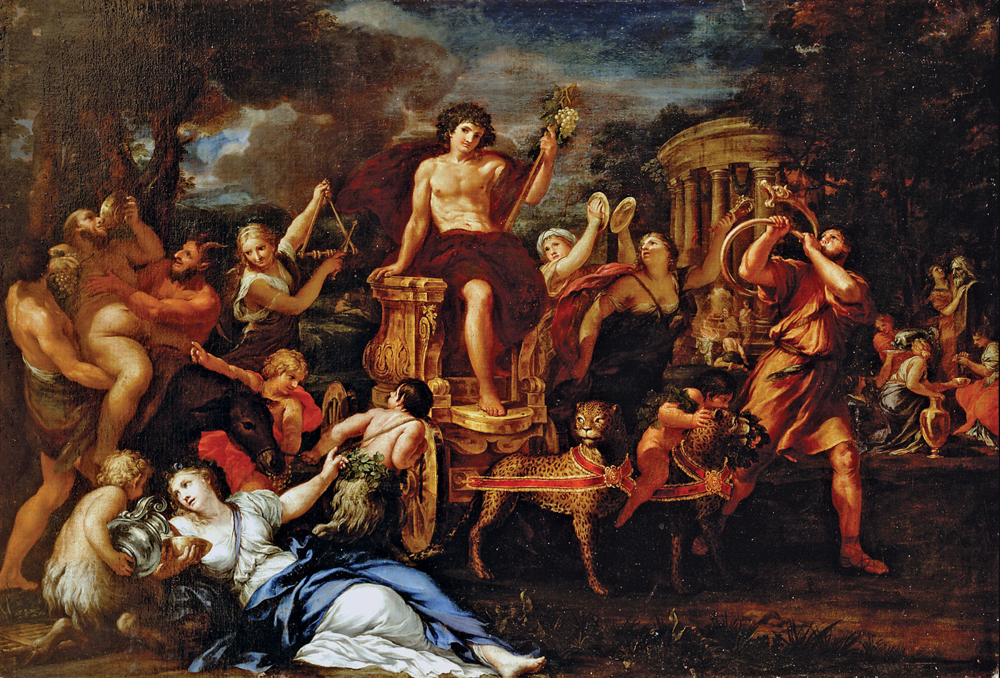

Dionysus: Worship, Festivals, and Legacy
Dionysus, the god of wine, festivity, and ecstasy, enjoyed widespread worship in ancient Greece, influencing culture, religion, and art. His legacy continues to captivate and inspire even today.
Worship and the Dionysian Mysteries
The cult of Dionysus was marked by rituals and ceremonies, most notably the Dionysian Mysteries. These rites were shrouded in secrecy, offering initiates spiritual rebirth and a closer connection to the divine. Participants engaged in ecstatic dances, the consumption of wine, and symbolic acts representing death and rebirth, reflecting the cyclical nature of life.
Festivals in Honor of Dionysus
Several festivals were held in Dionysus' honor, including the Dionysia and Bacchanalia. These celebrations were not just religious observances but also cultural events that included theatrical performances, parades, and feasts. The Dionysia, in particular, played a crucial role in the development of Greek theatre, with dramas and comedies performed as part of the festivities.